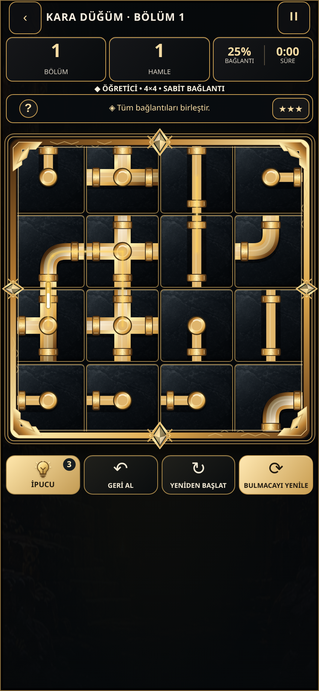
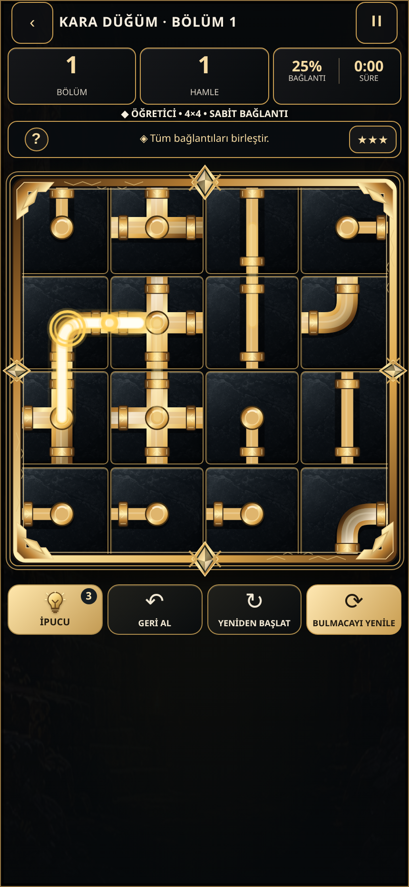

Bölüm 1 · Aynı düğüm döndürülmüş, aynı maskeler ve hamle · Görseller gerçek motordan alınmıştır.


Soldaki resim kullanıcının özgün referansı değil, önceki oyun sürümüdür. Referans Örnek 3’ün nitelik karşılaştırması rapordaki tabloda yer alır.